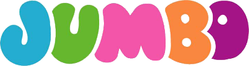

홈 > 브랜드 매거진 > Jumbo
점보 Jumbo
점보(Jumbo, Jumbo S.A.)는 1986년 그리스에서 출범한 장난감·유아·생활용품 소매 체인이다. 장난감 전문점에서 멀티카테고리 대형마트로 성장한 그리스의 상장 소매기업이다.
산업 분야 리테일·커머스 · 공개 등급 자료 기반 · 브랜드 평가 4.1 ★

한눈에 보는 브랜드
점보(Jumbo, Jumbo S.A.)는 1986년 그리스에서 출범한 장난감·유아·생활용품 소매 체인이다. 장난감 전문점에서 멀티카테고리 대형마트로 성장한 그리스의 상장 소매기업이다.
브랜드 관점
점보는 장난감에서 출발해 멀티카테고리 대형마트로 성장한 그리스의 대표 상장 소매기업이다. 설립·운영 주체, 업태·성격, 시장 포지션을 함께 보면 리테일·커머스 안에서의 위치가 또렷해진다.
시작과 성장
1986년 아포스톨로스 바카키스가 아테네에서 'Babyland'로 출범했다. 장난감 전문점에서 유아·생활용품·문구·계절장식을 아우르는 대형마트로 성장했고 1997년 아테네 증시에 상장했다.
브랜드 아이덴티티
Jumbo의 아이덴티티는 브랜드명, 로고 사용 여부, 업종 언어, 국가적 배경을 중심으로 정리됩니다. 공개 로고 자산은 추후 권리 확인 후 보강할 수 있도록 텍스트 메타데이터 중심으로 관리합니다.
제품과 서비스
장난감·유아용품·생활용품·문구·계절장식을 소매한다. 4만여 SKU의 폭넓은 구색이 특징이다.
현재 상태
BI/CI 변천사
자주 묻는 질문
점보는 어느 나라 브랜드인가요?
점보는 그리스의 리테일·커머스 브랜드입니다.
점보의 브랜드 아이덴티티는 무엇인가요?
Jumbo의 아이덴티티는 브랜드명, 로고 사용 여부, 업종 언어, 국가적 배경을 중심으로 정리됩니다.
점보의 대표 제품은 무엇인가요?
장난감·유아용품·생활용품·문구·계절장식을 소매한다.
점보는 현재 어떤 상태인가요?
국가: 그리스(아테네); 산업: 리테일·커머스